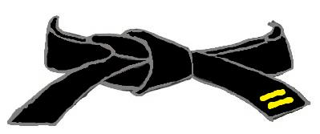

2º DAN
NERA

KIHON:
- KIZAMI ZUKI - SANBON ZUKI - URAKEN UCHI - GYAKU ZUKI – AGE EMPI UCHI
- KIZAMI ZUKI - MAE GERI – OIZUKI OYKOMI – KIZAMI YOKO GERI – GYAKU ZUKI
- AGE UKE, MAWASHI GERI – URAKEN UCHI – YOKO GERI KEKOMI - GYAKU ZUKI
- KIZAMI ZUKI - GYAKU ZUKI, MAE GERI – MAWASHI GERI (s.g.), URAKEN UCHI – GYAKU ZUKI,
MAWASHI GERI - YOKO GERI (s.g.), (SCENDO IN K.D.) – USHIRO GERI – URAKEN UCHI – GYAKU ZUKI SHIHO GERI
(Con partenza in H.D – c.g. – dx/sx: MAE, YOKO, USHIRO, MAWASHI)
- SHIHO TATE SHUTO - GYAKU ZUKI
KUMITE:
JIYU KUMITE
KATA:
- BASSAI DAI – KANKU DAI – JION – EMPI (due kata a scelta della Commissione)
- HANGETSU – JITTE – KANKU SHO (un kata a scelta dell’atleta)
- BUNKAI SHODAN
TEORIA:
Teoria relativa al grado e al periodo di pratica dell’atleta.

IL PROGRAMMA D’ESAME VA ALLENATO SIA A DESTRA CHE A SINISTRA
(Soprattutto per i bambini)